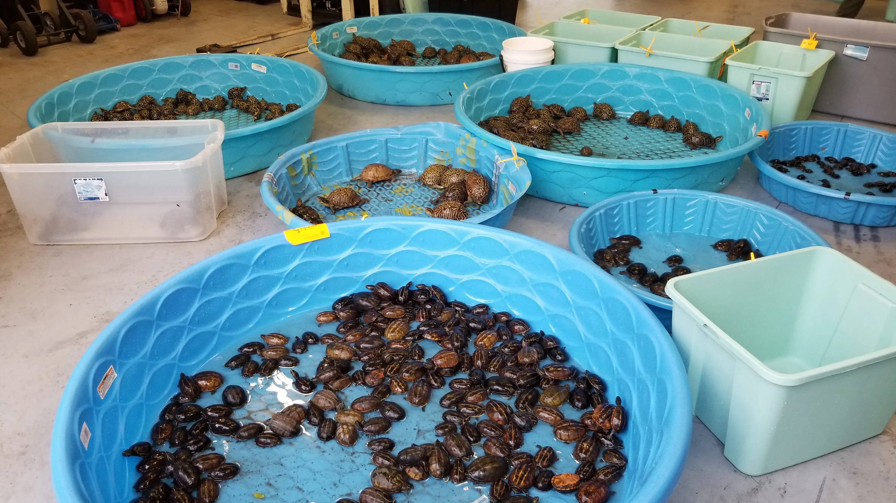

DIFFERENT THREATS FACED BY SEA TURTLES
1. Plastic pollution
The health and livelihoods of sea turtles and other marine life are at danger due to rising pollution in Sri Lanka, where waste is being dumped into the ocean. Each year, ocean pollution and marine debris ingestion cause thousands of sea turtles and other marine species to die. It's not only sea turtles that are suffering from the plastic pollution in Sri Lanka but also all the other sea animals that live there. If the necessary precautions and measures are not taken immediately, over time the turtle population in Sri Lanka might be endangered.
Consequences of plastic pollution
The level of garbage in the ocean will have a huge diverse impact on the turtles that averagely lives 70% of its life in the sea. The livelihoods of the turtles will be in danger if plastic materials and garbage is repeatedly thrown into the ocean as many different kinds of turtles population has been decreasing over time. The bodies of turtles were found to be stuffed with garbage from the ocean when they were examined and autopsied. Turtles die by either being strangled by these harmful materials or ingesting them into their bodies. This has become a sad reality to the many livelihoods of our turtles.
Sri Lanka is said to be the 5th largest plastic polluter in the world. This in itself is a reason why large numbers of baby turtles and sea turtles are dying in Sri Lanka, causing a decline in our country's turtle population.
How can we prevent plastic pollution?
There are several things we can do as humans to reduce the plastic waste that's been thrown into the ocean. One of the ways is by recycling materials used properly. If anything you use at home is a recyclable material, make sure you recycle them and not throw it away with your other waste materials.
You can also participate in beach cleanups. Many clubs and groups in Sri Lanka and all over the world carries out activities such as beach cleanups. Therefore, try participating in one.
Do not throw waste and litter the environment, throw them in the public garbage disposals you can find. When at the beach do not throw your wastes into the sea or on the beach, make sure to dispose them away in a proper manner.
2. Poachers
Over time, poachers have created an increasing threat to turtles and their eggs, particularly during the pandemic when unemployment was high. Poaching rose because it gave people a way to profit from the eggs. In Sri Lanka, turtle hatcheries purchase these eggs from poachers and store them there until the turtles hatch. They may mistreat or hurt turtles to obtain their shells or other body parts, and they unlawfully collect turtle eggs. They might later sell this on the blackmarket.

Consequences of poachers
They collect turtle eggs and sell them illegally for a much higher price. Poachers also smuggle turtle eggs illegally into the country or sell them at a much larger price to their buyers. They brutally harvest turtle’s eggs and end up leaving the turtles to die after the harvest. Turtles have been suffering in the hands of poachers in Sri Lanka, and their hatchlings as well. Poachers inflict so much pain onto the turtles, which has to be stopped immediately.
How can we prevent turtle eggs from being poached?
As we know, Sri Lankan turtle eggs have been collected and sold by poachers. There is a way in how we can possibly prevent this from happening. The turtle hatcheries in Sri Lanka has to pay a high price to buy the eggs from poachers in order to protect them. there are several constitues and organisations that actively participates in protecting sea turtles and their hatchlings in Sri Lanka. Poachers if found collecting turtle eggs and selling them illegally can be fined, this may prevent them from futher doing this if it costs them a huge amount.
3. Coastal development
The lives of hatchlings and turtles have suffered as a result of hotels and other structures being constructed over turtle hatcheries and nesting areas along the beaches. Coastal developments pose a threat to the coastal areas where sea turtles lay their eggs by bringing artificial light, pollution, and other hazards.
Consequences of coastal development
The consequences of coastal development are of many. This is when there are buildings been built along the coastal side of Sri Lanka which has diverse effects on the nesting and breeding of turtles. Since turtles can find their way to the ocean from the Earth's magnetic field. Turtles are also disturbed by loud noises and usually when people visit turtle conservations they are advised to not make loud sounds. Because this may disrupt them from finding their way around the beach and sea. Therefore, all the loud sounds made from construction could be really disturbing. These buildings can also replace the hatcheries in Sri Lanka that has been preserving turtles for several years.
How can we protect turtles despite coastal developments?
There needs to be rules and laws that prevents businesses from building in a way that would disrupt the livelihood of turtles. If these are effectively put in place and implemented properly, it can help the turtle population in Sri Lanka. This is because many sea turtle nestings have been destroyed as a result of coastal development.